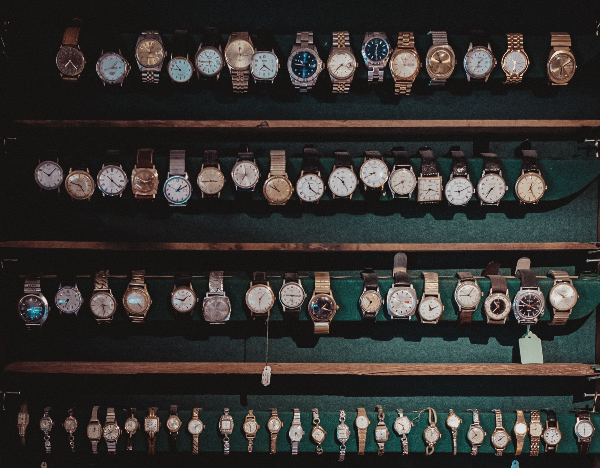

The History of Chronography
The first watches appeared in the early 16th century, most of them were made in Germany and France among other European countries. These watches were carried in the hand or worn on a chain around the neck.
Anatomy of A watch
Early watches were driven by a mainspring which consisted of a flat spring-steel band that was bent or coiled. When the watch, or other spring-driven mechanism, is wound, the curvature of the spring increased, and energy was stored that way. This energy is used to move the hand to tell the time. One of the main defect of early watches was how much energy was released as a result of the spring wounding. the energy exerted by the mainspring was greater when fully wound than when it was almost run down. This was solved by implementing a device(fusee) that would ensure the mainspring was wound at a constant speed to ensure the same amount of energy was released. This improvement ensured accurate timekeeping.

Watches in the modern day
Watches today are still a luxury item, that does not mean they are expensive. They are not worn by many people because most people maybe belive they are wasting their money or haven't looked into watches. I think watches are good to own because not only do they make you feel like you are in controll of time, they are a symbol of status and they are handmade and well designed. Watches are durable and last forever, they are trully a great piece of technology. They can run for more than 100 years! Yes you read that right!
What to consider when shopping for your first watch.
- Case size
- Bracelet or strap
- Cost
- Age(New, Vintage)
- Brand
When buying watches find the watch that looks good in your opinion not someone else's.